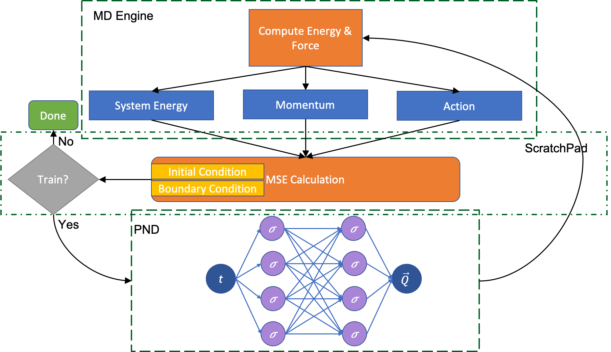

---
# Feel free to add content and custom Front Matter to this file.
# To modify the layout, see https://jekyllrb.com/docs/themes/#overriding-theme-defaults

short_name: Taufeq
location: Los Angeles
position: Graduate Student
custom_css: people.css
---

<div class="container-lg">
  <div class="d-flex flex-items-start flex-lg-row flex-column">
    <div class="col-12 col-lg-10 flex-shrink-0" id="about">
      <h3 class="border-top border-gray-dark">About</h3>
      <p>
        Taufeq is a Research Assistant at the Collaboratory for Advanced
        Computing and Simulations at the University of Southern California, Los
        Angeles. He has specialized in fluids and computational science and has
        been working on data-driven solutions of partial differential equations
        for problems in science and engineering.
      </p>

      <p>
        His expertise is in developing high performance numerical simulation
        codes for parallel and heterogeneous architectures for accurate
        visualization and optimization.
      </p>

      <p>
        He is also led teams to advance their technical stacks and digital
        presence while contributing across research labs, multidisciplinary
        research initiatives and course materials.
      </p>

      <p>
        Taufeq holds dual master degrees in Computer Science and Mechanical
        Engineering from the University of Southern California. He is also a
        graduate of Osmania University, from where he earned his bachelor in
        engineering with high distinction.
      </p>
    </div>

    <div class="col-12 col-lg-2" id="expertise">
      <h3 class="border-top border-gray-dark">Expertise</h3>
      <ul>
        <li>Parallel Programming</li>
        <li>Scientific Computing</li>
        <li>Software Engineering</li>
        <li>Web Technologies & Cloud Deployment</li>
        <li>Fluid Dynamics</li>
        <li>Molecular Dyanmics</li>
        <li>Machine learning & Artificial Intelligence</li>
        <li>Statistical Machanics</li>
        <li>VR and Game Development</li>
      </ul>
    </div>
  </div>

  <div class="col-12 col-lg-10" id="projects">
    <h3 class="border-top border-gray-dark">Projects</h3>

    {% for project in site.data.projects %}
      {% include project_card.html title=project.title
        description=project.description
        image=project.image
        url=project.url %}
    {% endfor %}
  </div>

  <div class="col-12 col-lg-10" id="hackathons">
    <h3 class="border-top border-gray-dark">Hackathons</h3>

    {% for project in site.data.hackathons %}
      {% include project_card.html title=project.title
        description=project.description
        image=project.image
        url=project.url %}
    {% endfor %}
  </div>

  <div class="col-12 col-lg-10" id="publications">
    <h3 class="border-top border-gray-dark">Publications</h3>
    <h4
      id="physics-informed-neural-network-software-for-molecular-dynamics-applications"
    >
      <a href="https://arxiv.org/abs/2011.03490"
        >Physics-informed Neural-Network Software for Molecular Dynamics
        Applications</a
      >
    </h4>
    <p>
      
      We have developed a novel differential equation solver software called PND
      based on the physics-informed neural network for molecular dynamics
      simulators. Based on automatic differentiation technique provided by
      Pytorch, our software allows users to flexibly implement equation of atom
      motions, initial and boundary conditions, and conservation laws as loss
      function to train the network. PND comes with a parallel molecular
      dynamics (MD) engine in order for users to examine and optimize loss
      function design, and different conservation laws and boundary conditions,
      and hyperparameters, thereby accelerate the PINN-based development for
      molecular applications. <br />
      <em
        >Taufeq Mohammed Razakh, Beibei Wang, Shane Jackson, Rajiv K. Kalia,
        Aiichiro Nakano, Ken-ichi Nomura, Priya Vashishta</em
      >
    </p>
  </div>

  <div class="col-12 col-lg-10" id="education">
    <h3 class="border-top border-gray-dark">Education</h3>
    <p><strong>University of Southern California</strong></p>
    <ul>
      <li>Masters in Computer Science <em>2021</em></li>
      <li>Masters in Mechanical Engineering <em>2018</em></li>
    </ul>

    <p><strong>Osmania University</strong></p>
    <ul>
      <li>Bachelor in Engineering <em>2016</em></li>
    </ul>
  </div>
</div>
